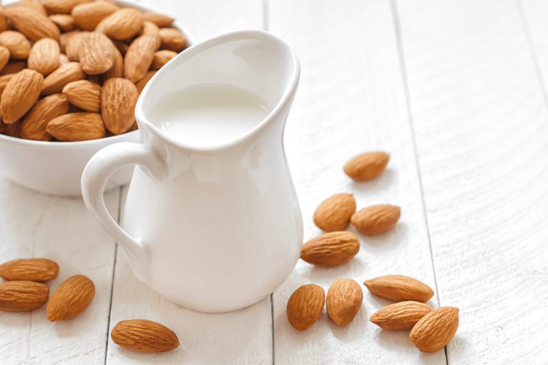

Cultured Almond Milk Kefir – with probiotics-
– raw / vegan / gluten-free –
Are you looking for ways to include probiotic-rich foods in your diet? Making your own Cultured Almond Milk Kefir is just one more way that you can enhance your overall nutrition.
It is loaded with good bacteria.

Almond milk by itself is low glycemic, easily digested by the body, and has Vitamin D. Still; I wanted to super-charge my almond milk by adding in probiotics, which are loaded with healthy bacteria and essential vitamins, minerals, live enzymes, and amino acids.
Keep in mind that non-dairy kefirs never get thick like regular dairy kefir drinks. If you wish to create a thicker almond milk kefir-like texture, you can either leave the almond pulp in or replace the pulp with 1/2 Tbsp of psyllium husks. One other way to control the thickness is to use less water when creating your almond milk.
If you leave the pulp in the milk, it will have little brown specks unless you decide to remove the skins from the almonds before blending. I like to remove the skins as often as possible because I find them a little bitter. Some people also find almonds easier to digest without the skins. It’s all about finding what works for you.
Taste test through the culturing process!
During the culturing process, it is essential to taste test the milk throughout the process. If you don’t enjoy a strong fermented flavor, you will want to stop the process sooner than later. If your house is warm, it can culture a lot quicker than you might expect.
After it hits that right level for you, it is time to flavor and sweeten if you wish. I like to add a little vanilla and some liquid NuNaturals stevia. If you are new to cultured foods, it is important to understand that probiotics are potent. Start with a ¼ cup a day until you build up your system. It can have a laxative effect or give you flu-like symptoms. If this happens, scale things back and start back up in smaller doses. It’s all part of the healing process.
 Ingredients:
Ingredients:
Yields 4 cups
Preparation:
Almond Milk:
Soaking process:
- Place the nuts in a glass bowl or stainless steel bowl and cover with two cups of water.
- Do not use plastic bowls for soaking.
- Always make sure you add enough water to keep the nuts covered, as they absorb water, they plump up.
- Keep the bowl at room temperature and cover with a breathable cloth. If something comes up and you won’t be able to use the nuts within the 24 hours, store them in the fridge, changing the water 2x a day.
- If there are any floating nuts, toss them. That can be an indicator of the nuts being rancid. Better to be safe than sorry. Think of them as “floaters are bloaters.”
- Add 1/4 tsp of Himalayan pink salt; this helps activate enzymes that de-activate the enzyme inhibitors.
- Soak for 8-24 hours.
- This process is excellent not only for reducing phytic acid but also softens the nuts, making them easier to blend into a smooth, silky texture.
- Skipping the soaking process will result in a less creamy milk.
- If you already have soaked/dehydrated nuts in the freezer or fridge, I suggest soaking them again to soften them.
Blending process:
- Once the nuts are done soaking, drain, rinse, and discard the soak water.
- Do not reuse the soak water for the milk-making process since this is full of the phytic acid/enzyme inhibitors that were drawn out during the soaking process.
- Place the nuts in a high-powered blender along with the water.
- Start the blender on low and work up to high, then blend for 30-60 seconds or until the nuts have been pulverized.
- A high-powered blender will accomplish the job much easier.
- If you don’t own one such as a Vitamix or Blendtec, you might have to blend for 1-2 minutes.
- Do not sweeten or add flavorings until you have strained the milk from the pulp.
- I don’t strain the pulp out, which will create thicker kefir, but this is up to you.
Culturing the kefir:
- Pour the almond milk into a quart glass jar, add the probiotic powder, and stir with a wooden spoon.
- Cover with a breathable cloth and secure with a rubber band.
- Culture at room temp, around 70 degrees for 12 hours.
- Colder temperatures slow down the culturing process.
- You know it is done when a thick “foam” forms on top, and it smells sour like yogurt.
- The almond milk should also be more of a clear liquid; it not, let it sit on the counter until it shifts in appearance.
- Be sure to start taste testing the almond milk at the 6-hour marker and then every few hours till it hits the level of flavor that you enjoy. Keep in mind that it is plain tasting, and the flavor will improve with added sweetener, etc. when it’s done.
- Store the fridge for 5-7 days.
- Sweeten and flavor to your liking. Enjoy poured onto cereal, mixed into recipes, or blended into smoothies! Yum!
© AmieSue.com